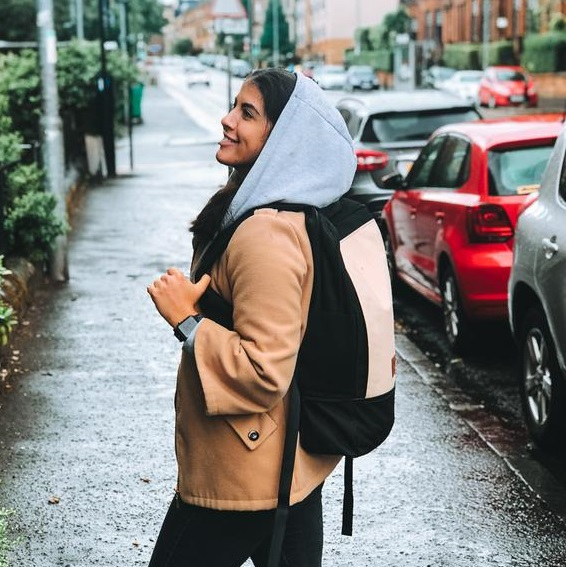
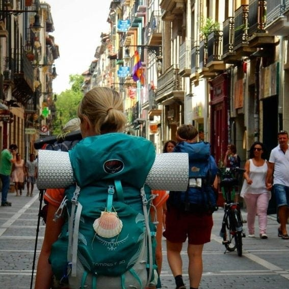
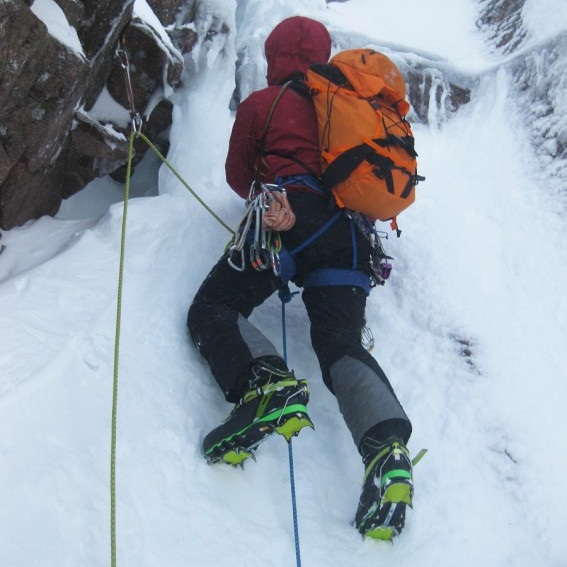
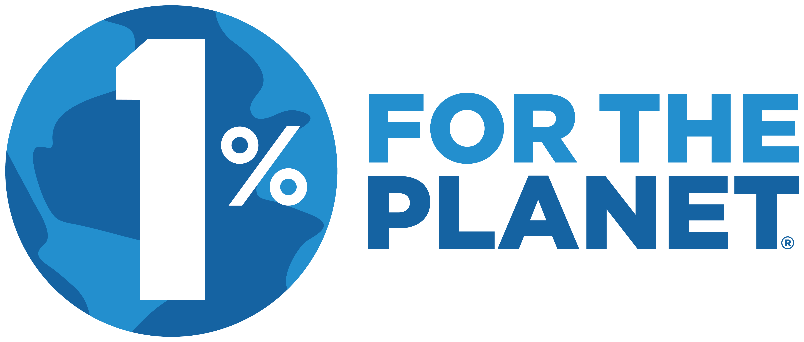

Colecciones
Urbana
Viajera
Alpinismo
ALTA CALIDAD. BAJO IMPACTO.
Fabricamos mochilas premium que se alinean con nuestra visión de sostenibilidad. Luchamos por convertirnos en la marca de artículos outdoor mas duraderos y confiables de la Argentina.
Tener una mochila pandora es tener calidad y funcionalidad todo el tiempo. Con diseños para uso urbano, para viajes y para practicar alpinismo de montaña.
La fundacion 1% para el planeta nos brinda conciencia sobre el daño que hacemos al planeta.
Es por eso que desde pandora aportamos el 1% de nuestras ganancias a esta fundacion. Es un compromiso con la comunidad y nuestros clientes.